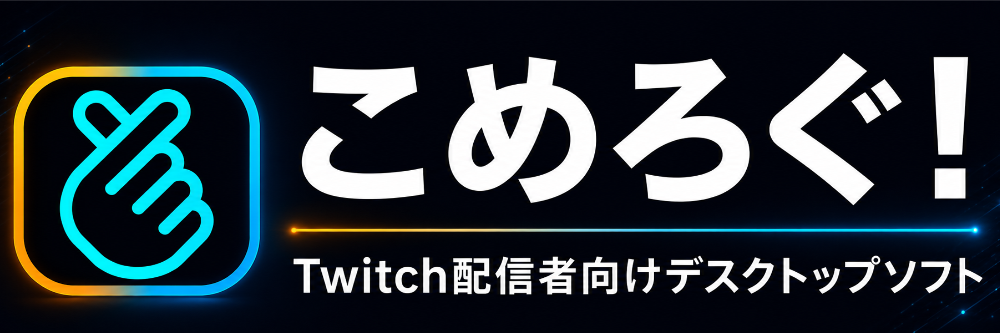
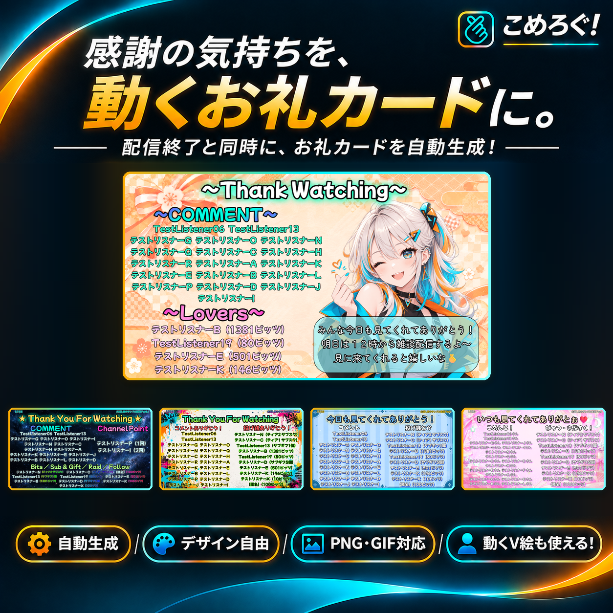
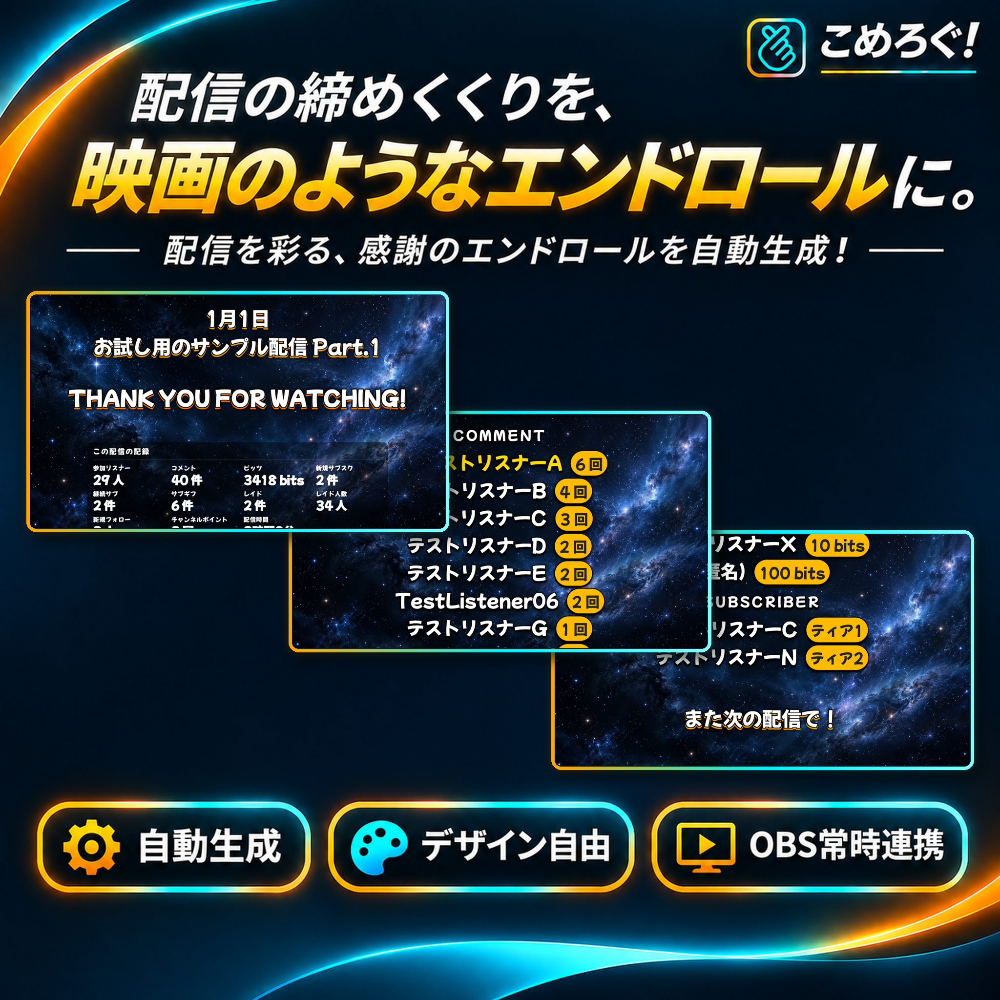
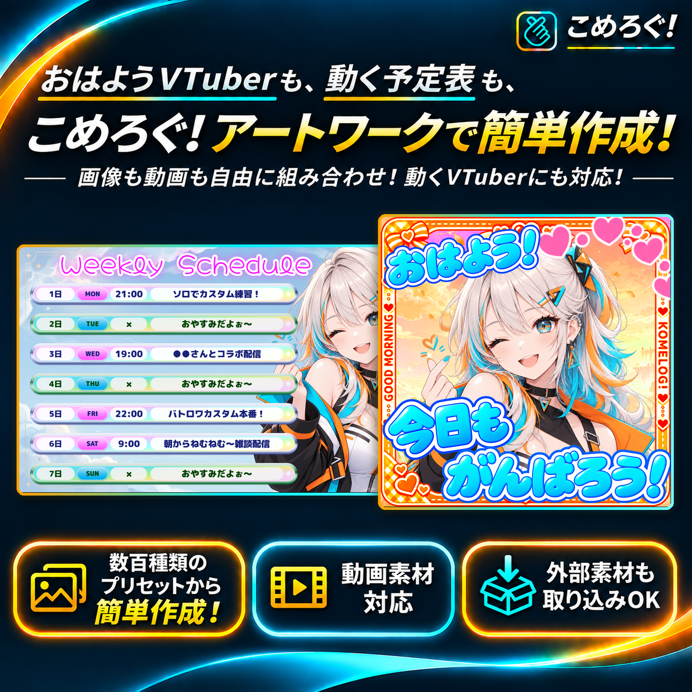

配信イベントを記録
配信中のコメントや応援を記録。配信後の作業に活用できます。
コメントも、応援も、配信の思い出も。こめろぐ！は、記録からお礼、演出、振り返りまでをひとつにつなぐ配信支援アプリです。
Windows 10 / 11（64bit）対応 · 無料のライト版あり

配信中の出来事を記録して、感謝を伝えるカードや配信の締めくくりに。いつもの配信を振り返り、リスナーとの時間を大切にするためのツールです。
アカウントを連携して準備。
配信中の出来事を記録します。
記録をカードや演出に活用。

配信の記録から、リスナーへのお礼カードを作成。デザインや動きを加えて、SNSで伝えたい「ありがとう」を形にできます。

記録を使ったエンドロールで、配信の締めくくりを彩ります。OBSなどの配信ソフトに表示できます。

こめろぐ！アートワークで、動く配信予定表やSNS用素材を作成。画像や動画を組み合わせて、自分らしいデザインに。
配信中のコメントや応援を記録。配信後の作業に活用できます。
カテゴリや時間帯ごとの傾向を見ながら、配信を振り返れます。
参加履歴やリスナー名刺、独自バッジで、一人ひとりとの時間を見返せます。
画像は制作物の紹介例です。表示内容や利用条件はバージョンにより異なります。
公開中の製品はTwitchに対応。Windows 10 / 11（64bit）で利用できます。配信記録にはTwitchアカウントが必要です。OBS表示には別途配信ソフトが必要です。
現在、YouTube統合版は開発・リリース準備中です。公開中の製品で利用できる機能ではありません。